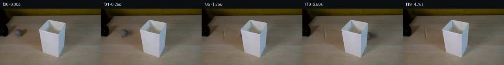

![首帧]()

Round 00
2026-11-05T16:15:06.269132+00:00像素候选变化代码 +213/−0inspection 更新
pixels 2a16c5c5d571a9ed · code 68c65a7ebc4b314c
查看本轮 generate.py 真实 diff
--- previous/generate.py
+++ current/generate.py
@@ -0,0 +1,213 @@
+"""Continue the supplied frame using local, deterministic pixel operations only."""
+from pathlib import Path
+import json
+import base64
+import re
+import numpy as np
+from PIL import Image, ImageDraw
+import cv2
+from scipy.ndimage import gaussian_filter, map_coordinates, distance_transform_edt
+from artifact_io import save
+
+ROOT = Path(__file__).resolve().parent
+W, H, N, FPS = 256, 144, 20, 4
+CX0, CY0, RX, RY = 46.5, 61.2, 9.8, 9.65
+STEP, SLOPE = 12.0, 0.065
+YY, XX = np.mgrid[:H, :W].astype(np.float64)
+
+
+def source_background(source):
+ # Include the sphere, its rightward cast shadow, and its diffuse contact shadow.
+ sphere = ((XX-CX0)/12.8)**2 + ((YY-CY0)/12.7)**2 < 1
+ cast = ((XX-60.0)/15.5)**2 + ((YY-60.8)/12.0)**2 < 1
+ contact = ((XX-48)/14.0)**2 + ((YY-72.2)/5.7)**2 < 1
+ core = sphere | cast | contact
+ # A local PDE fill supplies the large-scale illumination and tube-shadow edge.
+ fill = cv2.inpaint(source, core.astype(np.uint8)*255, 4, cv2.INPAINT_NS).astype(float)
+ # Restore fine horizontal grain from a neighboring, unobstructed tabletop patch.
+ donor = source.astype(float)[np.clip(YY.astype(int), 0, H-1),
+ np.clip(XX.astype(int)+44, 0, W-1)]
+ grain = donor - gaussian_filter(donor, sigma=(0.65, 2.4, 0))
+ fill += grain * 0.60 * core[..., None]
+ # Feather inside the fill boundary so pixels outside the patch stay identical.
+ weight = np.minimum(distance_transform_edt(core)/2.5, 1)
+ bg = np.rint(source*(1-weight[...,None]) + fill*weight[...,None])
+ return np.clip(bg,0,255).astype(np.uint8), core, weight
+
+
+def shade_mask():
+ # Measured outline; the hollow opening is also foreground for this rear trajectory.
+ mask = np.zeros((H,W), np.uint8)
+ points = np.array([[99,54], [120,29], [125,28], [167,37],
+ [161,106], [148,125], [111,111]], np.int32)
+ cv2.fillPoly(mask,[points],1)
+ return mask.astype(bool)
+
+
+def calibrate_surface(source):
+ # Fit a smooth screen-space illumination field to grey pixels of the initial ball.
+ nx = (XX-CX0)/RX
+ ny = (YY-CY0)/RY
+ r2 = nx*nx+ny*ny
+ nz = np.sqrt(np.maximum(0,1-r2))
+ neutral = (np.max(source,axis=2).astype(float)-np.min(source,axis=2)) < 12
+ valid = (r2<0.77) & neutral
+ features = np.stack([np.ones_like(nx),nx,ny,nz,nx*ny,nx*nx,ny*ny,
+ nx*ny*ny,nx*nx*ny,ny**3],axis=-1)
+ A = features[valid]
+ target = source.astype(float)[valid]
+ ridge = np.diag([0.02,0.1,0.1,0.8,1,1,1,3,3,3])
+ coefs = np.linalg.solve(A.T@A+ridge,A.T@target)
+ fitted = np.einsum('hwk,kc->hwc',features,coefs)
+ residual = source.astype(float)-fitted
+ # Remove object-edge contamination and keep source-derived surface variation small.
+ residual *= np.clip((0.86-r2)/0.18,0,1)[...,None] * neutral[...,None]
+ residual = gaussian_filter(residual,sigma=(0.5,0.5,0))
+ return coefs,residual,valid
+
+
+def sphere_sample(cx,cy,theta,coefs,residual):
+ nx=(XX-cx)/RX
+ ny=(YY-cy)/RY
+ r=np.sqrt(nx*nx+ny*ny)
+ nz=np.sqrt(np.maximum(0,1-r*r))
+ features=np.stack([np.ones_like(nx),nx,ny,nz,nx*ny,nx*nx,ny*ny,
+ nx*ny*ny,nx*nx*ny,ny**3],axis=-1)
+ # Fixed empirical light field, plus a material texture that rotates without sliding.
+ color=np.einsum('hwk,kc->hwc',features,coefs)
+ color=np.clip(color,38,111)
+ # Inverse rotation around the projected rolling axis, including the trajectory slope.
+ axis=np.array([-SLOPE,1.0,0.0]); axis/=np.linalg.norm(axis)
+ normal=np.stack([nx,ny,nz],axis=-1)
+ a=np.cos(theta);b=np.sin(theta)
+ material=normal*a-np.cross(axis,normal)*b + np.einsum('hwc,c->hw',normal,axis)[...,None]*axis*(1-a)
+ mx,my,mz=material[...,0],material[...,1],material[...,2]
+ sample_coords=[CY0+my*RY,CX0+mx*RX]
+ for channel in range(3):
+ tex=map_coordinates(residual[...,channel],sample_coords,order=1,mode='nearest')
… diff truncated; 126 more lines …